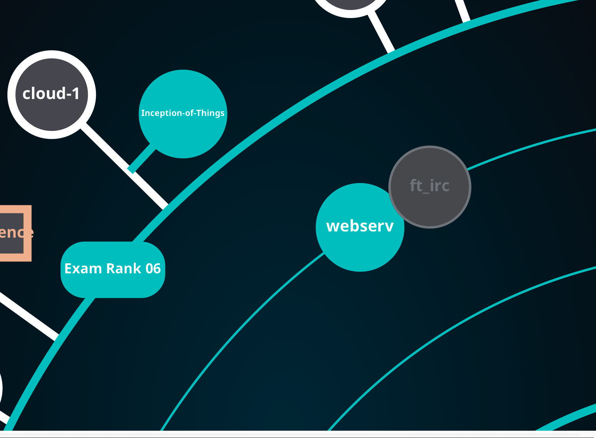

cloud-1

아직 작성중인 노트입니다.
intro

다음 학기 시작 전까지 개념공부만 하면서 시간을 보내려고 하니까 프로젝트가 하고 싶어졌습니다. 원래는 python 과제를 하려고 했는데, 이전에 cloud 과제를 진행하다가 말았던게 기억나서 이어서 해보면 괜찮겠다 생각했습니다.
프로젝트 및 구현 설명
개요
참고한 자료는 다음과 같습니다:
이 강의들도 본 지 1년이 다되어가긴 하지만..과제할 때 사용한 제 배경지식이 여기서 나온거니까요. 과제를 진행하실 분들은 한번 수강해보시면 도움이 될 것 같습니다.
이 포스팅에서 docker와 nginx, wordpress, mysql 구조에 대한 설명은 생략하겠습니다.
전체 코드는 github repo에서 확인하실 수 있습니다.
전체적인 구조

Public subnet의 EC2들에 대한 ssh 접근은 관리용 컴퓨터에서만(terraform, ansible 코드가 실행되는 컴퓨터) 접근이 가능하도록 제한했고, MySQL의 데이터는 Private subnet의 EC2에 저장하되 Public subnet의 EC2만 접근할 수 있도록 설정했습니다.
실제 프로덕션 환경이라면 위와 같은 구조로는 설계하지 않습니다. 일단 EC2 머신들을 Auto Scaling Group으로 묶고, 그 앞에 Network Load Balancer를 두어 단일 엔드포인트로 관리하는 것이 좋습니다. 또한 Database는 AWS RDS를 이용하고, WordPress의 파일 시스템은 EFS나 S3를 활용해 Stateless하게 구현하는게 좋습니다.
제 구현에서는 각 서버가 독립적인 상태와 엔드포인트를 가지고 있습니다.
그렇게 한 이유는 일단 aws free tier 서비스만으로 과제를 구현하려고 했던게 제일 크고요..(NLB는 사용할 수 없었습니다.) 나머지는 과제 제약사항 때문인데,

모든 프로세스는 컨테이너 안에서 동작해야 한다는 제약때문에, aws RDS는 사용할 수 없었습니다. 그리고 database는 public internet에서 접근할 수 없다고 해서, db는 private subnet의 ec2에서 돌아가게 설계했습니다.
IaC 설명, ansible, packer, terraform 설명
Pakcer 코드
database ec2는 private subnet에 두고, public subnet의 ec2만 연결이 가능하도록 설계할것입니다.
따라서 ansible로는 설정이 어렵습니다.
packer를 그래서 씁니다.
database.pkr.hcl
source "amazon-ebs" "database" {
region = var.AWS_REGION
profile = "default"
ami_name = "hyunghki-database-${formatdate("YYYYMMDDhhmmss", timestamp())}"
instance_type = "t2.micro"
source_ami_filter {
filters = {
name = "ubuntu/images/hvm-ssd/ubuntu-focal-20.04-amd64-server-*"
root-device-type = "ebs"
virtualization-type = "hvm"
}
most_recent = true
owners = ["099720109477"]
}
ssh_username = "ubuntu"
}ubuntu-20.04를 기본 이미지로 시작합니다.
database.pkr.hcl
build {
sources = ["source.amazon-ebs.database"]
provisioner "ansible" {
playbook_file = "${path.root}/ansible/database.yml"
user = "ubuntu"
ansible_env_vars = [
"ANSIBLE_HOST_KEY_CHECKING=False",
"MYSQL_USER=${var.MYSQL_USER}",
"MYSQL_PASSWORD=${var.MYSQL_PASSWORD}",
"DATABASE_NAME=${var.DATABASE_NAME}",
"MYSQL_ROOT_PASSWORD=${var.MYSQL_ROOT_PASSWORD}"
]
}
}packer의 ansible plugin을 사용하면, ansible을 이용해서 golden ami를 만들 수 있습니다.
조금 더 멱등성 있게 편리한 세팅을 진행할 수 있죠.
Terraform 코드
이제 본격적으로 provision을 해보겠습니다.
ansible 코드
이제 software 세팅을 시작하겠습니다.
build
Makefile
PROVISION_PATH=terraform/main
PACKER_PATH=packer
DEPLOY_PATH=ansible
include .env
export
.PHONY: provision deploy all destroy re build_ami
all: provision deploy
build_ami: packer
packer init $(PACKER_PATH)/database.pkr.hcl
@PKR_VAR_AWS_REGION=$(AWS_REGION) \
PKR_VAR_MYSQL_USER=$(MYSQL_USER) \
PKR_VAR_MYSQL_PASSWORD=$(MYSQL_PASSWORD) \
PKR_VAR_DATABASE_NAME=$(DATABASE_NAME) \
PKR_VAR_MYSQL_ROOT_PASSWORD=$(MYSQL_ROOT_PASSWORD) \
packer build $(PACKER_PATH)/database.pkr.hcl
provision: build_ami terraform
terraform -chdir=$(PROVISION_PATH) init
@TF_VAR_AWS_REGION=$(AWS_REGION) \
TF_VAR_SERVER_INSTANCE_COUNT=$(SERVER_INSTANCE_COUNT) \
TF_VAR_SSH_IP=$(SSH_IP) \
TF_VAR_SSH_PUBLIC_KEY_PATH=$(SSH_PUBLIC_KEY_PATH) \
terraform -chdir=$(PROVISION_PATH) apply -auto-approve
deploy: ansible
@DB_PRIVATE_IP="$(shell terraform -chdir=$(PROVISION_PATH) output -json db_private_ip | jq -r '.[]' | tr '\n' ' ')" \
ANSIBLE_HOST_KEY_CHECKING=False \
ANSIBLE_REMOTE_USER=ubuntu \
ansible-playbook \
-i $(DEPLOY_PATH)/inventories \
--private-key=$(SSH_PRIVATE_KEY_PATH) \
$(DEPLOY_PATH)/server.yml
destroy: terraform
@TF_VAR_AWS_REGION=$(AWS_REGION) \
TF_VAR_SERVER_INSTANCE_COUNT=$(SERVER_INSTANCE_COUNT) \
TF_VAR_SSH_IP=$(SSH_IP) \
TF_VAR_SSH_PUBLIC_KEY_PATH=$(SSH_PUBLIC_KEY_PATH) \
terraform -chdir=$(PROVISION_PATH) destroy -auto-approve
re: destroy all최종 build는 (42 seoul 사람에게 익숙한) makefile을 사용했습니다.
모든 변수는 .env로 관리하고 makefile 내부에서 환경변수로 가져와 packer, terraform, ansible 명령어를 실행해주었습니다.
사실 c언어도 아니고..이 과제 구현에서 makefile은 별로 어울리진 않은거 같긴 합니다만, 제가 아직 로컬에서 돌려볼만한 다른 build 툴을 배우지 않아서..
결과
아직 평가 전입니다.
outro
솔직히 일반적으로 사용되는 cloud 구조를 적용한건 아니긴 하지만, 과제에 맞춰서 진행하기 위해 고민하는 과정에서 다양한 구조를 적용해봤는데, 그 과정이 나름 학습에 도움이 된거 같습니다.
그렇다고 cloud를 처음 공부하시는 분들에게 학습 용도로 추천할만한 과제까지는 아닌거 같지만, 이 분야에 공부를 꽤 했고, 그 내용들을 다양하게 고민하며 적용해보고 싶다면 괜찮은 선택지가 될 것 같습니다.